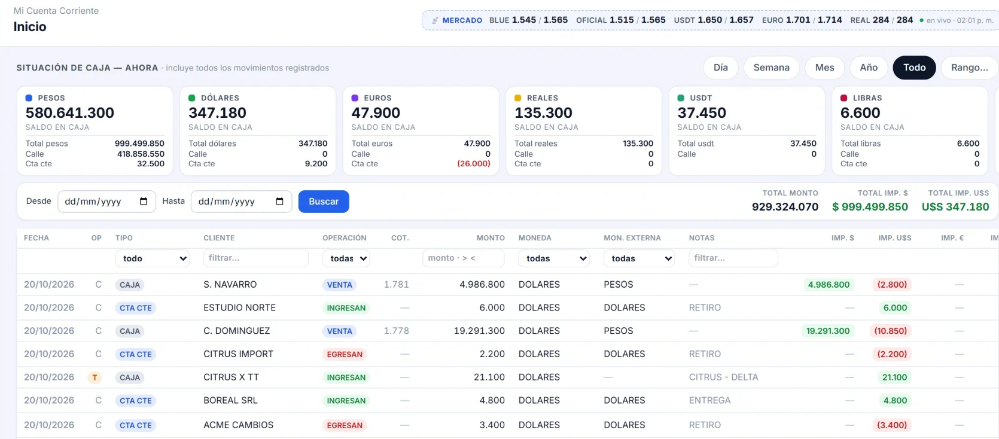

<meta name="claude:viewport-fit-sides" content="cover">
<title>Sistema para casas de cambio</title>

<link rel="stylesheet" href="https://fonts.googleapis.com/css2?family=Archivo:wght@500;600;800&family=IBM+Plex+Mono:wght@400;600&family=Newsreader:ital,opsz,wght@0,6..72,400;0,6..72,500;1,6..72,400&display=swap">

<style>
  /* Pizarra de cambio: panel oscuro con las monedas y sus importes arriba de todo,
     y debajo bloques de lectura angostos sobre papel frío. */
  :root {
    --papel:      #f3f5f8;
    --papel-alto: #ffffff;
    --tinta:      #121a26;
    --tinta-2:    #52606f;
    --borde:      #d8dee6;
    --pizarra:    #0d1420;
    --pizarra-2:  #18243a;
    --pizarra-txt:#e9eef6;
    --pizarra-dim:#8fa2bd;
    --verde:      #1f7a4d;
    --verde-claro:#e4f1ea;
    --ambar:      #b07615;

    --display: 'Archivo', 'Helvetica Neue', Arial, sans-serif;
    --texto:   'Newsreader', Georgia, 'Times New Roman', serif;
    --cifra:   'IBM Plex Mono', ui-monospace, 'Courier New', monospace;
  }
  @media (prefers-color-scheme: dark) {
    :root:not([data-theme="light"]) {
      --papel:      #0b1017;
      --papel-alto: #121a25;
      --tinta:      #e7edf4;
      --tinta-2:    #9aa8b8;
      --borde:      #26313f;
      --pizarra:    #151d2b;
      --pizarra-2:  #243249;
      --pizarra-txt:#e9eef6;
      --pizarra-dim:#8fa2bd;
      --verde:      #4aa97a;
      --verde-claro:#122a20;
      --ambar:      #d9a042;
      color-scheme: dark;
    }
  }
  :root[data-theme="dark"] {
    --papel:      #0b1017;
    --papel-alto: #121a25;
    --tinta:      #e7edf4;
    --tinta-2:    #9aa8b8;
    --borde:      #26313f;
    --pizarra:    #151d2b;
    --pizarra-2:  #243249;
    --pizarra-txt:#e9eef6;
    --pizarra-dim:#8fa2bd;
    --verde:      #4aa97a;
    --verde-claro:#122a20;
    --ambar:      #d9a042;
    color-scheme: dark;
  }

  body {
    background: var(--papel);
    color: var(--tinta);
    font-family: var(--texto);
    font-size: 17px;
    line-height: 1.6;
  }
  * { box-sizing: border-box }

  .envoltura {
    max-width: 920px;
    margin: 0 auto;
    padding-left: max(16px, env(safe-area-inset-left, 0px));
    padding-right: max(16px, env(safe-area-inset-right, 0px));
  }

  h1, h2, h3, .rotulo, .cifra { font-family: var(--display) }
  h1 {
    font-size: clamp(30px, 6.2vw, 50px);
    font-weight: 800;
    letter-spacing: -0.028em;
    line-height: 1.04;
    text-wrap: balance;
    margin: 0;
  }
  h2 {
    font-size: clamp(21px, 3.4vw, 27px);
    font-weight: 800;
    letter-spacing: -0.02em;
    line-height: 1.15;
    text-wrap: balance;
    margin: 0;
  }
  h3 {
    font-size: 15px;
    font-weight: 600;
    letter-spacing: 0.01em;
    margin: 0;
  }
  p { margin: 0 }
  .rotulo {
    font-size: 11.5px;
    font-weight: 600;
    letter-spacing: 0.16em;
    text-transform: uppercase;
    color: var(--tinta-2);
  }
  .lede {
    font-size: clamp(18px, 2.4vw, 21px);
    line-height: 1.5;
    color: var(--tinta-2);
    max-width: 60ch;
  }

  /* ── Portada ─────────────────────────────────────────────────── */
  /* Fondo oscuro, el mismo del cierre: la portada y la captura dejan de ser dos bloques
     pegados y pasan a ser uno solo, y el folleto abre y cierra con la misma cara. */
  .portada { background: var(--pizarra); color: var(--pizarra-txt); padding-block: 40px }
  .portada h1 { color: var(--pizarra-txt) }
  .portada .lede { color: var(--pizarra-dim) }
  .portada .envoltura { display: flex; flex-direction: column; gap: 18px }
  .portada .rotulo { color: var(--ambar) }
  /* Titular y bajada en dos columnas, alineados por abajo.
     En una sola columna la bajada se cortaba a los 60 caracteres y la mitad derecha de la
     portada quedaba vacía, con un escalón entre el titular largo y el párrafo angosto.
     Al costado, ese hueco pasa a ser la segunda columna. */
  .titular {
    display: grid;
    grid-template-columns: minmax(0, 1.3fr) minmax(0, 1fr);
    gap: 16px 44px;
    align-items: end;
  }
  .titular .lede { max-width: none }
  @media (max-width: 720px) { .titular { grid-template-columns: minmax(0, 1fr); align-items: start } }

  /* ── Pizarra ─────────────────────────────────────────────────── */
  .pizarra { background: var(--pizarra); color: var(--pizarra-txt); padding-block: 0 10px }
  .pizarra .envoltura { display: flex; flex-direction: column; gap: 16px }
  /* El aviso va PEGADO al borde inferior de la imagen y a la derecha, en letra chica: es
     una aclaración legal, no parte del mensaje. El texto que explica la pantalla va
     después, en su propia franja con aire parejo arriba y abajo. */
  .aviso-ejemplo {
    margin-top: 6px;
    font-size: 11px; color: var(--pizarra-dim); opacity: .75;
    text-align: right;
  }
  .pie-texto { padding-block: 20px }
  /* La captura de la pantalla de verdad, sacada con `npm run captura` contra la base de
     demostración. Antes había acá un tablero DIBUJADO con el pie "es la primera pantalla al
     entrar": era un dibujo, y un folleto que afirma algo que la primera demostración
     desmiente juega en contra. */
  .captura {
    display: block;
    width: 100%; max-width: 1400px; height: auto;
    margin: 0 auto;
    border-top: 1px solid rgba(255,255,255,.14);
    border-bottom: 1px solid rgba(255,255,255,.14);
  }
  .pizarra-pie { font-size: 14.5px; color: var(--pizarra-dim); max-width: 72ch }

  /* ── Bloques ─────────────────────────────────────────────────── */
  .bloque { padding-block: 40px }
  .bloque .envoltura { display: flex; flex-direction: column; gap: 22px }
  .bloque + .bloque { border-top: 1px solid var(--borde) }


  /* ── Funcionalidades ─────────────────────────────────────────── */
  .grupos { display: flex; flex-direction: column; gap: 2px; background: var(--borde); border: 1px solid var(--borde) }
  .grupo {
    background: var(--papel-alto);
    padding: 20px 20px 22px;
    display: grid;
    grid-template-columns: minmax(150px, 210px) minmax(0, 1fr);
    gap: 10px 28px;
    align-items: start;
  }
  .grupo > .titulo { display: flex; flex-direction: column; gap: 5px }
  .grupo > .titulo .rotulo { color: var(--verde) }
  .grupo h3 { font-size: 19px; font-weight: 800; letter-spacing: -0.015em }
  /* Una sección explica con listas y la otra con un párrafo: la caja es la misma. */
  .grupo > p { font-size: 16px; line-height: 1.55 }
  .grupo ul { margin: 0; padding: 0; list-style: none; display: flex; flex-direction: column; gap: 9px }
  .grupo li { font-size: 16px; line-height: 1.5; padding-left: 17px; position: relative }
  .grupo li::before {
    content: ""; position: absolute; left: 0; top: 0.62em;
    width: 6px; height: 6px; border-radius: 1px; background: var(--verde); opacity: .8;
  }
  .grupo li b { font-family: var(--display); font-weight: 600; font-size: 15.5px }
  @media (max-width: 640px) { .grupo { grid-template-columns: minmax(0, 1fr) } }

  /* ── Propuesta ───────────────────────────────────────────────── */
  .precios {
    display: grid;
    grid-template-columns: repeat(auto-fit, minmax(265px, 1fr));
    gap: 18px;
  }
  .precio {
    min-width: 0;
    background: var(--papel-alto);
    border: 1px solid var(--borde);
    padding: 22px 22px 24px;
    display: flex; flex-direction: column; gap: 14px;
  }
  .precio.destacado { border-color: var(--verde); background: var(--verde-claro) }
  .precio .rotulo { color: var(--tinta-2) }
  .precio.destacado .rotulo { color: var(--verde) }
  .monto-grande {
    font-family: var(--display);
    font-size: clamp(32px, 6vw, 42px);
    font-weight: 800;
    letter-spacing: -0.03em;
    line-height: 1;
    font-variant-numeric: tabular-nums;
    display: flex; align-items: baseline; gap: 7px; flex-wrap: wrap;
  }
  .monto-grande .div { font-size: 0.42em; font-weight: 600; letter-spacing: 0.04em; color: var(--tinta-2) }
  /* `letter-spacing: normal`: sin esto hereda el interletrado negativo del número y el
     espacio entre las dos palabras se cierra tanto que se lee "pormes". */
  .monto-grande .per { font-family: var(--texto); font-size: 0.4em; font-weight: 400; color: var(--tinta-2); letter-spacing: normal }
  .precio ul { margin: 0; padding: 0; list-style: none; display: flex; flex-direction: column; gap: 8px }
  .precio li { font-size: 16px; padding-left: 17px; position: relative; line-height: 1.45 }
  .precio li::before {
    content: ""; position: absolute; left: 0; top: 0.6em;
    width: 7px; height: 2px; background: var(--verde);
  }
  .extra {
    margin-top: auto;
    padding-top: 13px;
    border-top: 1px solid var(--borde);
    font-size: 15px;
    color: var(--tinta-2);
    display: flex; justify-content: space-between; gap: 12px; flex-wrap: wrap;
  }
  .precio.destacado .extra { border-top-color: rgba(31,122,77,.35) }
  .extra .cifra { font-family: var(--cifra); font-weight: 600; color: var(--tinta); font-variant-numeric: tabular-nums }

  .nota {
    font-size: 15.5px;
    color: var(--tinta-2);
    max-width: 68ch;
  }

  /* ── Cierre ──────────────────────────────────────────────────── */
  .cierre { background: var(--pizarra); color: var(--pizarra-txt); padding-block: 38px 42px }
  .cierre .envoltura { display: flex; flex-direction: column; gap: 14px }
  .cierre h2 { color: var(--pizarra-txt) }
  .cierre p { color: var(--pizarra-dim); max-width: 62ch; font-size: 17px }
  .cierre .rotulo { color: var(--ambar) }
  .contacto {
    display: flex; flex-wrap: wrap; align-items: baseline; gap: 4px 12px;
    padding-top: 13px; border-top: 1px solid rgba(255,255,255,.15);
  }
  .contacto .quien { font-family: var(--display); font-weight: 600; font-size: 14px; color: var(--pizarra-txt) }
  /* El número en la tipografía de cifras y con los dígitos de ancho fijo: es un dato para
     copiar, no texto para leer de corrido. */
  .contacto .tel {
    font-family: var(--cifra); font-weight: 600; font-size: 15px; color: var(--ambar);
    font-variant-numeric: tabular-nums;
  }
</style>

<header class="portada">
  <div class="envoltura">
    <p class="rotulo">Sistema de gestión para casas de cambio</p>
    <div class="titular">
      <h1>Toda tu operación, en un solo lugar y al instante.</h1>
      <p class="lede">
        Caja en todas las monedas, cuentas corrientes con el saldo de cada cliente,
        transferencias, gastos y resultados. En la nube, sin instalar nada, desde la
        computadora o el teléfono.
      </p>
    </div>
  </div>
</header>

<section class="pizarra">
  
  <div class="envoltura">
    <p class="aviso-ejemplo">La imagen contiene datos de ejemplo.</p>
  </div>
  <div class="envoltura pie-texto">
    <p class="pizarra-pie">
      En una sola pantalla la situación de caja de cada moneda y el listado de transacciones que se van ejecutando. Visualización diaria, semanal, mensual. Lista de transacciones con filtros dinámicos.
    </p>
  </div>
</section>

<section class="bloque" id="lo-que-cambia">
  <div class="envoltura">
    <h2>Ventajas de una App sobre una planilla de cálculos</h2>
    <div class="grupos">

      <div class="grupo">
        <div class="titulo">
          <p class="rotulo">Control</p>
          <h3>El saldo, al minuto</h3>
        </div>
        <p>
          El saldo de caja y el de cada cuenta corriente se actualizan con cada operación.
          No hay que esperar al cierre ni rehacer cuentas para saber cómo viene el día.
        </p>
      </div>

      <div class="grupo">
        <div class="titulo">
          <p class="rotulo">Trazabilidad</p>
          <h3>Quién hizo qué, y cuándo</h3>
        </div>
        <p>
          Cada alta, cada edición y cada borrado quedan registrados con su autor y su hora.
          El registro no se puede modificar ni borrar, ni siquiera desde la aplicación.
        </p>
      </div>

      <div class="grupo">
        <div class="titulo">
          <p class="rotulo">Gestión</p>
          <h3>Los números para decidir</h3>
        </div>
        <p>
          Ganancias por día, semana, mes o año, posición consolidada de las cuentas corrientes
          y cuánto dinero está en la calle, sin armar nada a mano.
        </p>
      </div>

    </div>
  </div>
</section>

<section class="bloque" id="que-hace">
  <div class="envoltura">
    <h2>Principales Funcionalidades</h2>
    <div class="grupos">

      <div class="grupo">
        <div class="titulo">
          <p class="rotulo">Operación</p>
          <h3>El día a día al instante</h3>
        </div>
        <ul>
          <li><b>Caja en todas las monedas.</b> Pesos, dólares, euros, reales, libras, USDT y cheques, cada una con su saldo.</li>
          <li><b>Alta de operaciones en segundos.</b> Compras, ventas, ingresos y egresos, con el impacto a la vista antes de guardar.</li>
          <li><b>Transferencias</b> entre partes, con su ganancia calculada.</li>
          <li><b>Gastos</b> del negocio, descontados de la caja.</li>
          <li><b>Dinero en calle:</b> qué está en manos de cada repartidor y cuándo vuelve.</li>
          <li><b>Cotizaciones de referencia</b> del mercado, siempre a la vista y rotuladas como externas, para no confundirlas con las propias.</li>
        </ul>
      </div>

      <div class="grupo">
        <div class="titulo">
          <p class="rotulo">Cuentas corrientes</p>
          <h3>El saldo de cada cliente</h3>
        </div>
        <ul>
          <li><b>Saldo por cliente y por moneda,</b> con el detalle de cada movimiento y el acumulado.</li>
          <li><b>Posición consolidada:</b> cuánto se debe y cuánto se tiene a cobrar, todo junto.</li>
          <li><b>Extracto en PDF</b> para mandarle al cliente.</li>
          <li><b>El cliente entra con su propio usuario</b> y consulta su saldo desde el teléfono, cuando quiere, sin llamar ni pedirlo.</li>
        </ul>
      </div>

      <div class="grupo">
        <div class="titulo">
          <p class="rotulo">Gestión y control</p>
          <h3>Lo que mira el dueño</h3>
        </div>
        <ul>
          <li><b>Ganancias</b> por día, semana, mes o año.</li>
          <li><b>Usuarios con permisos por rol:</b> operador, administrador y cliente ven cosas distintas.</li>
          <li><b>Auditoría:</b> registro inmutable de quién hizo qué, con el antes y el después de cada cambio.</li>
          <li><b>Copias de respaldo</b> de la información.</li>
        </ul>
      </div>

    </div>
  </div>
</section>

<section class="bloque">
  <div class="envoltura">
    <h2>Propuesta económica</h2>
    <div class="precios">

      <div class="precio destacado">
        <p class="rotulo">Puesta en marcha · pago único</p>
        <p class="monto-grande"><span class="div">USD</span>2.500</p>
        <ul>
          <li>Migración de los datos actuales</li>
          <li>Implementación</li>
          <li>Capacitación y asistencia en la puesta en marcha</li>
        </ul>
      </div>

      <div class="precio">
        <p class="rotulo">Soporte mensual</p>
        <p class="monto-grande"><span class="div">USD</span>150<span class="per">por mes</span></p>
        <ul>
          <li>Entorno de desarrollo y base de datos</li>
          <li>Dominio standard</li>
          <li>3 horas de soporte y mejoras</li>
        </ul>
        <p class="extra"><span>Hora adicional</span><span class="cifra">USD 35</span></p>
      </div>

    </div>
    <p class="nota">
      La migración incluye pasar la información con la que se viene trabajando, de modo que el
      sistema arranque con la historia completa y los saldos de las cuentas ya cargados.
    </p>
  </div>
</section>

<section class="cierre">
  <div class="envoltura">
    <p class="rotulo">Siguiente paso</p>
    <h2>Una demostración de quince minutos sobre tu propia operatoria</h2>
    <p>
      Contame qué monedas operás y cuántas cuentas corrientes manejás, y con eso armamos la
      demostración y estimamos la migración.
    </p>
    <div class="contacto">
      <span class="quien">Contacto: Sebastián</span>
      <span class="tel">+541166420776</span>
    </div>
  </div>
</section>
